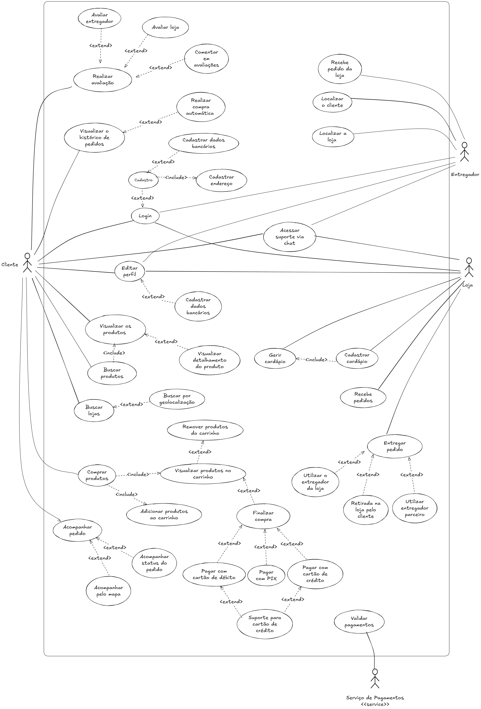

Diagrama de Casos de Uso - Geral
Introdução
Este documento apresenta o diagrama de casos de uso geral do sistema do HungryHub, representando todas as funcionalidades que dizem respeito aos três atores principais do sistema (Cliente, Loja e Entregador).
Metodologia
O diagrama foi desenvolvido de forma a identificar todos os atores e denifir os casos de uso que indicam o fluxo de ações gerais no sistema, ou seja que dizem respeito aos três atores que utilizariam o sistema do HungryHub.
Foi utilizada a ferramenta Excalidraw para a criação do diagrama.
Tabela 1 - Casos de Uso
| Código | Caso de Uso | Resonsável |
|---|---|---|
| UC01 | Login | Davi Gonçalves Akegawa Pierre |
| UC02 | Editar perfil | Davi Gonçalves Akegawa Pierre |
| UC03 | Buscar produtos | Davi Gonçalves Akegawa Pierre |
| UC04 | Buscar lojas | Davi Gonçalves Akegawa Pierre |
| UC05 | Comprar produtos | Davi Gonçalves Akegawa Pierre |
| UC06 | Acompanhar pedido | Felipe Amorim de Araújo |
| UC07 | Visualizar histórico de pedidos | Felipe Amorim de Araújo |
| UC08 | Acessar suporte via chat | Felipe Amorim de Araújo |
| UC09 | Realizar avaliação | Lucas Martins Gabriel |
| UC10 | Cadastrar cardápio | Lucas Martins Gabriel |
| UC11 | Recebe pedidos | Lucas Martins Gabriel |
| UC12 | Entregar pedido | Guilherme Silva Dutra |
| UC13 | Recebe pedido da loja | Guilherme Silva Dutra |
| UC14 | Localizar o cliente | Guilherme Silva Dutra |
| UC15 | Localizar a loja | Guilherme Silva Dutra |
Posteriormente, todos os casos de uso representados no diagrama foram especificados utilizando a tabela modelo como base.
Diagrama

Autores: Felipe Amorim de Araújo, Guilherme Silva Dutra, Lucas Martins Gabriel, Davi Gonçalves Akegawa Pierre
Especificações
| Elemento | Descrição |
|---|---|
| Caso de Uso | Nome do Caso de Uso |
| Descrição | Descrição do objetivo do caso de uso |
| Requisitos | Lista de requisitos que o caso de uso atende |
| Atores | Lista dos atores que interagem com o caso de uso |
| Frequência de Uso | Frequência com que o caso de uso será executado |
| Pré-condições | Condições que devem ser verdadeiras antes do início do caso de uso |
| Fluxo Principal | Passos do Fluxo Principal |
| Fluxo Alternativo | Passos do Fluxo Alternativo |
| Fluxo de Exceção | Passos do fluxo de exceção, descrevendo possíveis erros ou condições atípicas |
| Pós-condições | Condições que devem ser verdadeiras após a execução do caso de uso |
| Data da Criação | Data em que o caso de uso foi criado |
Especificação UC01 Login
| Elemento | Descrição |
|---|---|
| Caso de Uso | Login |
| Descrição | O usuário acessa o aplicativo e realiza a ação de login para ter acesso ao seu perfil |
| Requisitos | R01, R02,R03,R04 |
| Atores | Cliente, Loja ou Entregador |
| Frequência de Uso | Alta |
| Pré-condições | - Um telefone celular com conexão com a internet. - O aplicativo HungryHub baixado no telefone celular. |
| Fluxo Principal | - O usuário liga o telefone ligado a internet. - O usuário abre o aplicativo HungryHub. - O usuaŕio insere as informações de email cadastrado e senha associada ao email cadastrado. - O usuário clica no botão de "Entrar". |
| Fluxo Alternativo | - O usuário liga o telefone conectado a internet. - O usuário abre o aplicativo HungryHub. - O usuário clica no botão "Cadastrar-se". - O usuário insere as informações requeridas pelo aplicativo. - O usuário valida o email. - O usuário volta para a tela de Login. - O usuaŕio insere as informações de email cadastrado e senha associada ao email cadastrado. - O usuário clica no botão de "Entrar" |
| Fluxo de Exceção | - O usuário erra sua senha. - O usuário recebe um erro em veremelho de "Senha incorreta". - O usuário clica em "Esqueci minha senha". - O usuário pede um email para redefinir a senha. - O usuário redefine sua senha no email enviado pelo HungryHub. - O usuário retorna para a tela de Login. - O usuário insere as informaçoes de email cadastrado e a nova senha associada ao email cadastrado. - O usuário clica no botão de "Entrar". |
| Pós-condições | O usuário consegue acessar o aplicativo pelo seu perfil. |
| Data da Criação | 27/11/2024 |
Autores: Davi Gonçalves Akegawa Pierre
Especificação UC02 Editar perfil
| Elemento | Descrição |
|---|---|
| Caso de Uso | Editar perfil |
| Descrição | O usuário deve ser capaz de editar informações públicas e privadas do seu perfil |
| Requisitos | R05, R06 |
| Atores | Usuário |
| Frequência de Uso | Média |
| Pré-condições | - Um telefone celular com conexão com a internet. - O aplicativo HungryHub baixado no telefone celular. - Uma conta logada no aplicativo HungryHub |
| Fluxo Principal | - O usuário acessa o aplicativo e navega até o seu pefrfil. - O usuário navega até a informação que deseja editar na página de perfil. - O usuário altera os dados desejados. - O usuário salva os dados editados. |
| Fluxo Alternativo | - O usuário acessa o aplicativo e navega até o seu perfil. - O usuário navega até seus dados bancários. - O usuário cadastra seus dados bancários no sistema. - O usuário salva os dados bancários cadastrados. |
| Fluxo de Exceção | - O usuário acessa o aplicativo e navega até o seu pefrfil. - O usuário navega até a informação que deseja editar na página de perfil. - O usuário altera os dados desejados. - O usuário sai do aplicativo antes de salvar as alterações feitas. - Os dados são revertidos para os originais antes da troca. |
| Pós-condições | Os dados do perfil do usuário foram editados com sucesso. |
| Data da Criação | 27/11/2024 |
Autores: Davi Gonçalves Akegawa Pierre
Especificação UC03 Buscar produtos
| Elemento | Descrição |
|---|---|
| Caso de Uso | Buscar produtos |
| Descrição | O usuário deseja encontrar um produto específico para comer |
| Requisitos | R07, R08, R09 |
| Atores | Cliente |
| Frequência de Uso | Alta |
| Pré-condições | - Um telefone celular com conexão com a internet. - O aplicativo HungryHub baixado no telefone celular. - Uma conta logada no aplicativo HungryHub |
| Fluxo Principal | - O usuário acessa o aplicativo pelo telefone celular. - O usuário realiza o login no aplicativo. - O usuário clica na ferramenta de busca do aplicativo. - O usuário digita o nome do produto a ser pesquisado. - O usuário encontra o produto desejado e pede o mesmo. |
| Fluxo Alternativo | - O usuário acessa o aplicativo pelo telefone celular. - O usuário realiza o login no aplicativo. - O usuário clica na ferramenta de busca do aplicativo. - O usuário digita o nome do produto a ser pesquisado. - O usuário encontra o produto. - O usuário clica no produto encontrado para ver os detalhes do produto. - O usuário decide se pede o produto ou não. |
| Fluxo de Exceção | - O usuário acessa o aplicativo pelo telefone celular. - O usuário realiza o login no aplicativo. - O usuário clica na ferramenta de busca do aplicativo. - O usuário digita o nome do produto a ser pesquisado. - O aplicativo imprime uma mensagem de erro de "Produto não encontrado". - O usuário percebe um erro ortográfico. - O usuário corrige o erro. - O usuário encontra o produto desejado e pede o mesmo. |
| Pós-condições | O cliente encontra o produto procurado |
| Data da Criação | 28/11/2024 |
Autores: Davi Gonçalves Akegawa Pierre
Especificação UC04 Buscar lojas
| Elemento | Descrição |
|---|---|
| Caso de Uso | Buscar lojas |
| Descrição | O usuário deseja encontrar uma loja para pedir seu lanche, almoço ou jantar |
| Requisitos | R10 |
| Atores | Cliente |
| Frequência de Uso | Alto |
| Pré-condições | - Um telefone celular com conexão com a internet. - O aplicativo HungryHub baixado no telefone celular. - Uma conta logada no aplicativo HungryHub |
| Fluxo Principal | - O usuário acessa o aplicativo pelo telefone celular. - O usuário realiza o login no aplicativo. - O usuário clica na ferramenta de busca do aplicativo. - O usuário digita o nome da loja a ser pesquisado. - O usuário encontra a loja que está sendo pesquisada. - O usuário realiza seu pedido. |
| Fluxo Alternativo | - O usuário acessa o aplicativo pelo telefone celular. - O usuário realiza o login no aplicativo. - O usuário clica na ferramenta de busca por geolocalizaçao. - O usuário procura entre as lojas próximas dele qual ele quer pedir. - O usuário clica no ícone de uma loja. - O usuário continua seu pedido. |
| Fluxo de Exceção | - O usuário acessa o aplicativo pelo telefone celular. - O usuário realiza o login no aplicativo. - O usuário clica na ferramenta de busca do aplicativo. - O usuário digita o nome dda loja a ser pesquisada. - O aplicativo imprime uma mensagem de erro de "Loja não encontrada". - O usuário percebe um erro ortográfico. - O usuário corrige o erro. - O usuário encontra a loja desejada e realiza seu pedido. |
| Pós-condições | O usuário encontra a loja que estava procurando |
| Data da Criação | 28/11/2024 |
Autores: Davi Gonçalves Akegawa Pierre
Especificação UC05 Comprar produtos
| Elemento | Descrição |
|---|---|
| Caso de Uso | Comprar produtos |
| Descrição | O usuário deseja trocar dinheiro por produtos de uma loja. |
| Requisitos | R11, R12, R13, R14 |
| Atores | Cliente |
| Frequência de Uso | Alta |
| Pré-condições | - Um telefone celular com conexão com a internet. - O aplicativo HungryHub baixado no telefone celular. - Uma conta logada no aplicativo HungryHub. |
| Fluxo Principal | - O usuário acessa o aplicativo pelo telefone celular. - O usuário realiza o login no aplicativo. - O usuário clica na ferramenta de busca do aplicativo. - O usuário digita o nome da loja a ser pesquisado. - O usuário encontra a loja que está sendo pesquisada. - O usuário escolhe entre as opções o produto que mais lhe agrada. - O usuário adiciona os produtos no carrinho. - O usuário aperta no ícone do carrinho no aplicativo. - O usuário visualiza os produtos no carrinho. |
| Fluxo Alternativo 1 | - O usuário acessa o aplicativo pelo telefone celular. - O usuário realiza o login no aplicativo. - O usuário clica na ferramenta de busca do aplicativo. - O usuário digita o nome da loja a ser pesquisado. - O usuário encontra a loja que está sendo pesquisada. - O usuário escolhe entre as opções o produto que mais lhe agrada. - O usuário adiciona os produtos no carrinho. - O usuário aperta no ícone do carrinho no aplicativo. - O usuário visualiza os produtos no carrinho. - O usuário muda de ideia sobre um produto. - O usuário remove esse ítem do seu carrinho. |
| Fluxo Alternativo 2 | - O usuário acessa o aplicativo pelo telefone celular. - O usuário realiza o login no aplicativo. - O usuário clica na ferramenta de busca do aplicativo. - O usuário digita o nome da loja a ser pesquisado. - O usuário encontra a loja que está sendo pesquisada. - O usuário escolhe entre as opções o produto que mais lhe agrada. - O usuário adiciona os produtos no carrinho. - O usuário aperta no ícone do carrinho no aplicativo. - O usuário visualiza os produtos no carrinho. - O usuário finaliza sua compra. |
| Fluxo Alternativo 3 | - O usuário acessa o aplicativo pelo telefone celular. - O usuário realiza o login no aplicativo. - O usuário clica na ferramenta de busca do aplicativo. - O usuário digita o nome da loja a ser pesquisado. - O usuário encontra a loja que está sendo pesquisada. - O usuário escolhe entre as opções o produto que mais lhe agrada. - O usuário adiciona os produtos no carrinho. - O usuário aperta no ícone do carrinho no aplicativo. - O usuário visualiza os produtos no carrinho. - O usuário finaliza sua compra. - O usuário decide pagar com o cartão de débito. |
| Fluxo Alternativo 4 | - O usuário acessa o aplicativo pelo telefone celular. - O usuário realiza o login no aplicativo. - O usuário clica na ferramenta de busca do aplicativo. - O usuário digita o nome da loja a ser pesquisado. - O usuário encontra a loja que está sendo pesquisada. - O usuário escolhe entre as opções o produto que mais lhe agrada. - O usuário adiciona os produtos no carrinho. - O usuário aperta no ícone do carrinho no aplicativo. - O usuário visualiza os produtos no carrinho. - O usuário finaliza sua compra. - O usuário decide pagar com o cartão de crédito. |
| Fluxo Alternativo 5 | - O usuário acessa o aplicativo pelo telefone celular. - O usuário realiza o login no aplicativo. - O usuário clica na ferramenta de busca do aplicativo. - O usuário digita o nome da loja a ser pesquisado. - O usuário encontra a loja que está sendo pesquisada. - O usuário escolhe entre as opções o produto que mais lhe agrada. - O usuário adiciona os produtos no carrinho. - O usuário aperta no ícone do carrinho no aplicativo. - O usuário visualiza os produtos no carrinho. - O usuário finaliza sua compra. - O usuário decide pagar com o PIX. |
| Fluxo de Exceção 1 | - O usuário acessa o aplicativo pelo telefone celular. - O usuário realiza o login no aplicativo. - O usuário clica na ferramenta de busca do aplicativo. - O usuário digita o nome da loja a ser pesquisado. - O usuário encontra a loja que está sendo pesquisada. - O usuário escolhe entre as opções o produto que mais lhe agrada. - O usuário adiciona os produtos no carrinho. - O usuário aperta no ícone do carrinho no aplicativo. - O usuário visualiza os produtos no carrinho. - O usuário finaliza sua compra. - O usuário decide pagar com o cartão de débito. - O aplicativo não reconhece o cartão. - O usuário precisa ligar para o suporte de cartão de débito. - O problema do usuário é resolvido pela equipe de suporte. - O usuário completa sua compra. |
| Fluxo de Exceção 2 | - O usuário acessa o aplicativo pelo telefone celular. - O usuário realiza o login no aplicativo. - O usuário clica na ferramenta de busca do aplicativo. - O usuário digita o nome da loja a ser pesquisado. - O usuário encontra a loja que está sendo pesquisada. - O usuário escolhe entre as opções o produto que mais lhe agrada. - O usuário adiciona os produtos no carrinho. - O usuário aperta no ícone do carrinho no aplicativo. - O usuário visualiza os produtos no carrinho. - O usuário finaliza sua compra. - O usuário decide pagar com o cartão de crédito. - O aplicativo não reconhece o cartão. - O usuário precisa ligar para o suporte de cartão de crédito. - O problema do usuário é resolvido pela equipe de suporte. - O usuário completa sua compra. |
| Pós-condições | O cliente é capaz de confirmar a compra de seu produto desejado |
| Data da Criação | 28/11/2024 |
Autores: Davi Gonçalves Akegawa Pierre
Especificação UC06 Acompanhar pedido
| Elemento | Descrição |
|---|---|
| Caso de Uso | Acompanhar pedido |
| Descrição | O usuário acompanha os status ou a localizaçao do seu pedido realizado |
| Requisitos | R15 |
| Atores | Cliente |
| Frequência de Uso | Alta |
| Pré-condições | - Um telefone celular com conexão com a internet. - O aplicativo HungryHub baixado no telefone celular. - Uma conta logada no aplicativo HungryHub. |
| Fluxo Principal | - O usuário acessa o aplicativo pelo telefone celular. - O usuário realiza o login no aplicativo. - O usuário acessa a aba de "Meus Pedidos". - O usuário seleciona o pedido que realizou. - O usuário acompanha o pedido |
| Fluxo Alternativo 1 | - O usuário acessa o aplicativo pelo telefone celular. - O usuário realiza o login no aplicativo. - O usuário acessa a aba de "Meus Pedidos". - O usuário seleciona o pedido que realizou. - O usuário observa os status atual atualizado do pedido |
| Fluxo Alternativo 2 | - O usuário acessa o aplicativo pelo telefone celular. - O usuário realiza o login no aplicativo. - O usuário acessa a aba de "Meus Pedidos". - O usuário seleciona o pedido que realizou. - O usuário acessa o mapa - O usuário observa a localização atual do pedido no restaurante ou com o entregador |
| Fluxo de Exceção 1 | - O usuário acessa o aplicativo pelo telefone celular. - O usuário realiza o login no aplicativo. - O usuário acessa a aba de "Meus Pedidos". - O usuário seleciona o pedido que realizou. - Os status do pedido não está sendo atualizado - O usuário não é capaz de acompanhar em tempo real o status do pedido |
| Fluxo de Exceção 2 | - O usuário acessa o aplicativo pelo telefone celular. - O usuário realiza o login no aplicativo. - O usuário acessa a aba de "Meus Pedidos". - O usuário seleciona o pedido que realizou. - O usuário acessa o mapa - O mapa não está atualizado com a localização atual - O usuário não é capaz de acompanhar a localização atualizada do pedido |
| Pós-condições | O cliente consegue se informar do status atual do seu pedido |
| Data da Criação | 28/11/2024 |
Autores: Felipe Amorim de Araújo
Especificação UC07 Visualizar histórico de pedidos
| Elemento | Descrição |
|---|---|
| Caso de Uso | Visualizar histórico de pedidos |
| Descrição | O usuário visualiza informações do seu histórico de pedidos que já foram ou não entregues e pode realizar uma compra automática |
| Requisitos | R20, R21 |
| Atores | Cliente |
| Frequência de Uso | Média |
| Pré-condições | - Um telefone celular com conexão com a internet. - O aplicativo HungryHub baixado no telefone celular. - Uma conta logada no aplicativo HungryHub. |
| Fluxo Principal | - O usuário acessa o aplicativo pelo telefone celular. - O usuário realiza o login no aplicativo. - O usuário acessa a aba de "Meus Pedidos". - O usuário visualiza as informações dos pedidos que já realizou como preço, itens, data e horário de pedido e entrega |
| Fluxo Alternativo | - O usuário acessa o aplicativo pelo telefone celular. - O usuário realiza o login no aplicativo. - O usuário acessa a aba de "Meus Pedidos". - O usuário seleciona um pedido que realizou. - O usuário seleciona um item que deseja comprar - O usuário acessa a tela de informações do item do pedido e aperta o botão de visualizar produto na loja - O usuário realiza a compra do produto |
| Fluxo de Exceção | - O usuário acessa o aplicativo pelo telefone celular. - O usuário realiza o login no aplicativo. - O usuário acessa a aba de "Meus Pedidos". - O usuário seleciona um pedido que realizou. - O usuário seleciona um item que deseja comprar - O usuário acessa a tela de informações do item do pedido e aperta o botão de visualizar produto na loja O item não está mais disponível para entrega O usuário não é capaz de realizar a compra do pedido |
| Pós-condições | O cliente consegue visualizar informações úteis dos pedidos que já realizou |
| Data da Criação | 28/11/2024 |
Autores: Felipe Amorim de Araújo
Especificação UC08 Acessar suporte via chat
| Elemento | Descrição |
|---|---|
| Caso de Uso | Acessar suporte via chat |
| Descrição | O usuário acessa uma interface de suporte via chat para comunicação com loja, entregador ou cliente |
| Requisitos | R36 |
| Atores | Cliente, Loja, Entregador |
| Frequência de Uso | Alta |
| Pré-condições | - Um telefone celular com conexão com a internet. - O aplicativo HungryHub baixado no telefone celular. - Uma conta logada no aplicativo HungryHub. |
| Fluxo Principal | - O usuário acessa o aplicativo pelo telefone celular. - O usuário realiza o login no aplicativo. - O usuário acessa a interface de pedidos. - O usuário seleciona um pedido específico em andamento. - O usuário abre a interface de suporte via chat. - O usuário seleciona falar com o cliente, a loja ou o entregador. - O usuário consegue realizar a comunicação |
| Fluxo de Exceção | - O usuário acessa o aplicativo pelo telefone celular. - O usuário realiza o login no aplicativo. - O usuário acessa a interface de pedidos. - O usuário seleciona um pedido específico em andamento. - O usuário abre a interface de suporte via chat. - O serviço de chat está fora do ar - O usuário reporta o problema |
| Data da Criação | 28/11/2024 |
Autores: Felipe Amorim de Araújo
Especificação UC09 Realizar avaliação
| Elemento | Descrição |
|---|---|
| Caso de Uso | Realizar avaliação |
| Descrição | O usuário avalia a loja ou o entregador após a entrega do pedido |
| Requisitos | R22, R23, R24 |
| Atores | Cliente |
| Frequência de Uso | Alta |
| Pré-condições | - Um telefone celular com conexão com a internet. - O aplicativo HungryHub baixado no telefone celular. - Uma conta logada no aplicativo HungryHub. |
| Fluxo Principal | - O usuário acessa o aplicativo pelo telefone celular. - O usuário realiza o login no aplicativo. - O usuário acessa a aba de "Meus Pedidos". - O usuário seleciona um pedido que realizou. - O usuário realiza avaliação |
| Fluxo Alternativo 1 | - O usuário acessa o aplicativo pelo telefone celular. - O usuário realiza o login no aplicativo. - O usuário acessa a aba de "Meus Pedidos". - O usuário seleciona um pedido que realizou. - O usuário avalia o entregador que fez a entrega do seu pedido com estrelas e um comentário |
| Fluxo Alternativo 2 | - O usuário acessa o aplicativo pelo telefone celular. - O usuário realiza o login no aplicativo. - O usuário acessa a aba de "Meus Pedidos". - O usuário seleciona um pedido que realizou. - O usuário avalia a loja que preparou seu pedido com estrelas e um comentário |
| Fluxo Alternativo 3 | - O usuário acessa o aplicativo pelo telefone celular. - O usuário realiza o login no aplicativo. - O usuário acessa a aba de "Meus Pedidos". - O usuário seleciona um pedido que realizou. - O usuário comenta em outras avaliações de entregadores ou lojas |
| Fluxo de Exceção | - O usuário acessa o aplicativo pelo telefone celular. - O usuário realiza o login no aplicativo. - O usuário acessa a aba de "Meus Pedidos". - O usuário seleciona um pedido que realizou. - O usuário tenta avaliar um pedido que não foi entregue - O usuário não é capaz de avaliar um pedido que não foi entregue |
| Pós-condições | O cliente consegue avaliar a loja ou o entregador que realizou a entrega do pedido |
| Data da Criação | 28/11/2024 |
Autores: Lucas Martins Gabriel
Especificação UC10 Cadastrar cardápio
| Elemento | Descrição |
|---|---|
| Caso de Uso | Cadastrar cardápio |
| Descrição | A loja cadastra o cardápio de produtos que ela oferece |
| Requisitos | R25, R26 |
| Atores | Loja |
| Frequência de Uso | Alta |
| Pré-condições | - Um telefone celular com conexão com a internet. - O aplicativo HungryHub baixado no telefone celular. - Uma conta logada no aplicativo HungryHub. |
| Fluxo Principal | - A loja acessa o aplicativo pelo telefone celular. - A loja realiza o login no aplicativo. - A loja acessa a aba de "Meus Produtos". - A loja seleciona a opção de "Cadastrar Produto". - A loja preenche as informações do produto. - A loja salva o produto |
| Fluxo Alternativo | |
| Fluxo de Exceção | - A loja acessa o aplicativo pelo telefone celular. - A loja realiza o login no aplicativo. - A loja acessa a aba de "Meus Produtos". - A loja seleciona a opção de "Cadastrar Produto". - A loja preenche as informações do produto. - A loja não salva o produto - O produto não é cadastrado |
| Pós-condições | A loja consegue cadastrar um produto no cardápio |
| Data da Criação | 28/11/2024 |
Autores: Lucas Martins Gabriel
Especificação UC11 Recebe pedidos
| Elemento | Descrição |
|---|---|
| Caso de Uso | Recebe pedidos |
| Descrição | A loja recebe os pedidos realizados pelos clientes |
| Requisitos | R27 |
| Atores | Loja |
| Frequência de Uso | Alta |
| Pré-condições | - Um telefone celular com conexão com a internet. - O aplicativo HungryHub baixado no telefone celular. - Uma conta logada no aplicativo HungryHub. |
| Fluxo Principal | - A loja acessa o aplicativo pelo telefone celular. - A loja realiza o login no aplicativo. - A loja acessa a aba de "Pedidos". - A loja seleciona o pedido que foi realizado. - A loja confirma o pedido. - A loja prepara o pedido. - A loja entrega o pedido |
| Fluxo Alternativo | |
| Fluxo de Exceção | - A loja acessa o aplicativo pelo telefone celular. - A loja realiza o login no aplicativo. - A loja acessa a aba de "Pedidos". - A loja não encontrou o pedido que foi realizado. - A loja não confirma o pedido - O pedido não é preparado - O pedido não é entregue |
| Pós-condições | A loja consegue receber, preparar e entregar o pedido |
| Data da Criação | 28/11/2024 |
Autores: Lucas Martins Gabriel
Especificação UC12 Entregar pedidos
| Elemento | Descrição |
|---|---|
| Caso de Uso | Entregar pedidos |
| Descrição | A loja realiza a entrega do pedido |
| Requisitos | R28 e R30 |
| Atores | Loja |
| Frequência de Uso | Alta |
| Pré-condições | - Um telefone celular com conexão com a internet. - O aplicativo HungryHub baixado no telefone celular. - Uma conta logada no aplicativo HungryHub. - Pedido pronto para entrega |
| Fluxo Principal | - A loja termina um pedido - A loja acessa o aplicativo pelo telefone celular. - A loja realiza o login no aplicativo. - A loja atualiza o status do pedido para pronto para entrega. - A loja confirma ao aplicativo que precisa de um entregador do HungryHub para fazer a entrega do pedido. - A loja entrega o pedido ao entregador |
| Fluxo Alternativo 1 | - A loja termina um pedido - A loja acessa o aplicativo pelo telefone celular. - A loja realiza o login no aplicativo. - A loja atualiza o status do pedido para pronto para entrega. - A loja diz ao aplicativo que não vai precisar de um motorista do HungryHub para realizar a entrega. - A loja entrega o pedido a um motorista parceiro. |
| Fluxo Alternativo 2 | - A loja termina um pedido - A loja acessa o aplicativo pelo telefone celular. - A loja realiza o login no aplicativo. - A loja atualiza o status do pedido para pronto para entrega. - O aplicativo informa que o pedido será retirado fisicamente pelo cliente. - A loja entrega o pedido ao cliente. |
| Fluxo de Exceção | - A loja acessa o aplicativo pelo telefone celular. - A loja realiza o login no aplicativo. - A loja acessa a aba de "Pedidos". - A loja recebe um pedido. - A loja prepera um pedido - O entregador não aparece para buscar o pedido e nem o cliente retira o pedido fisicamente na loka - O pedido não é entregue |
| Pós-condições | - O pedido é entregue ao cliente |
| Data da Criação | 28/11/2024 |
Autores: Guilherme Silva Dutra
Especificação UC13 Recebe pedido da loja
| Elemento | Descrição |
|---|---|
| Caso de Uso | Recebe pedido da loja |
| Descrição | O entregador faz a retirada do pedido para realizar a sua entrega |
| Requisitos | R31 |
| Atores | Entregador |
| Frequência de Uso | Alta |
| Pré-condições | - Um telefone celular com conexão com a internet. - O aplicativo HungryHub baixado no telefone celular. - Uma conta logada no aplicativo HungryHub. - Ser um entregador da loja ou do aplicativo |
| Fluxo Principal | - O entregador acessa o celular. - O entregador faz login - O entregador recebe uma notificação de uma solicitação de entrega. - O entregador aceita a solicitação e se direciona até a loja. - O entregador recebe o pedido da loja. |
| Fluxo Alternativo | |
| Fluxo de Exceção | - O entregador recebe uma notificação no celular de uma solicitação de entrega. - O entregador aceita a solicitação e se direciona até a loja. - O entr egador demora muito a chegar na loja e o aplicatio designa outro entregador para aquele pedido. - O entregador não recebe o pedido. |
| Pós-condições | - O entregador recebe o pedido para fazer a entrega |
| Data da Criação | 28/11/2024 |
Autores: Guilherme Silva Dutra
Especificação UC14 Localizar o cliente
| Elemento | Descrição |
|---|---|
| Caso de Uso | Localizar o cliente |
| Descrição | O entregador atráves do aplicativo localiza o endereço físico do cliente |
| Requisitos | R33 |
| Atores | Entregador |
| Frequência de Uso | Alta |
| Pré-condições | - Um telefone celular com conexão com a internet. - O aplicativo HungryHub baixado no telefone celular. - Uma conta logada no aplicativo HungryHub. - O entregador recebeu um pedido e está para entrega-lo |
| Fluxo Principal | - O entregador recebe um pedido da loja. - O entregador acessa o aplicativo pelo celular. - O entregador faz login. - O entregador busca o endereço do cliente pela geolocalização do aplicativo. |
| Fluxo Alternativo | |
| Fluxo de Exceção | - O entregador recebe um pedido da loja. - O entregador acessa o aplicativo pelo celular. - O entregador faz login. - O entregador tenta buscar o endereço do cliente pela geolocalização do aplicativo, mas o serviço está fora do ar. - O entregador não consegue locaizar o cliente |
| Pós-condições | - O entregador localiza o endereço físico do cliente para fazer a entrega |
| Data da Criação | 28/11/2024 |
Autores: Guilherme Silva Dutra
Especificação UC15 Localizar a loja
| Elemento | Descrição |
|---|---|
| Caso de Uso | Localizar a loja |
| Descrição | O entregador atráves do aplicativo localiza o endereçço físico da loja |
| Requisitos | R32 |
| Atores | Entregador |
| Frequência de Uso | Alta |
| Pré-condições | - Um telefone celular com conexão com a internet. - O aplicativo HungryHub baixado no telefone celular. - Uma conta logada no aplicativo HungryHub. - O entregador deve ter aceitado uma solicitação de entrega |
| Fluxo Principal | - O entregador acessa o celular. - O entregador faz login - O entregador recebe uma notificação de uma solicitação de entrega. - O entregador aceita a solicitação. - O entregador pelo serviço de geolocalização do aplicativo localiza o endereço físico da loja. |
| Fluxo Alternativo | |
| Fluxo de Exceção | - O entregador acessa o celular. - O entregador faz login - O entregador recebe uma notificação de uma solicitação de entrega. - O entregador aceita a solicitação. - O entregador pelo serviço de geolocalização do aplicativo tenta localiza o endereço físico da loja, mas o serviço não está disponível. - O entregador não consegue localizar a loja. |
| Pós-condições | - O entregador localiza o endereço físisco da loja para realizar a entrega |
| Data da Criação | 28/11/2024 |
Autores: Guilherme Silva Dutra
Histórico de Versão
| Versão | Data da alteração | Comentário | Autor(es) | Revisor(es) | Data de revisão |
|---|---|---|---|---|---|
| 1.0 | 26/11/2024 | Criação do documento, adicionando introdução, metodologia e diagrama | Felipe Amorim de Araújo | Gabryel Nicolas S de Sousa | 29/11/2024 |
| 1.1 | 28/11/2028 | Criação da especialização dos casos de uso UC01, UC02, UC03, UC04, UC05 e atualização da tabela 1 | Davi Gonçalves Akegawa Pierre | Gabryel Nicolas S de Sousa | 29/11/2024 |
| 1.2 | 28/11/2028 | Criação da especialização dos casos de uso UC06 e UC07 | Felipe Amorim de Araújo | Gabryel Nicolas S de Sousa | 29/11/2024 |
| 1.3 | 28/11/2028 | Criação da especialização do caso de uso UG08 | Felipe Amorim de Araújo | Gabryel Nicolas S de Sousa | 29/11/2024 |
| 1.4 | 28/11/2028 | Adicionando especificação dos casos de uso UC09, UC10 e UC11 | Lucas Martins Gabriel | Gabryel Nicolas S de Sousa | 29/11/2024 |
| 1.5 | 28/11/2028 | Adicionando especificação dos casos de uso UC12, UC13, UC14 e UC15 | Guilherme Silva Dutra | Gabryel Nicolas S de Sousa | 29/11/2024 |